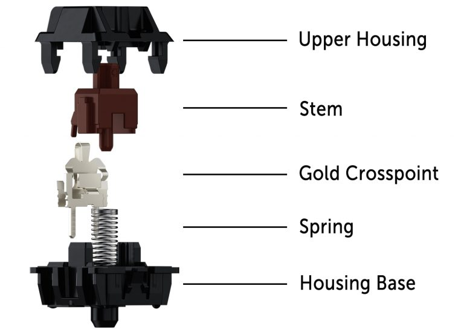

Mechanical keyboards¶
Unlike cheaper rubber dome or membrane keyboards, this type of keyboard has real mechanical switches. The advantage is that they’re usually more durable and provide more accurate feeling which is beneficial for both fast typing and gaming needs. There are many different types of mechanical keyboards, one of the most common are keyboards based on the MX switches originally made by Cherry.
Cherry MX¶
{kind=link}

A MX switch as pictured on the left is a surprisingly complex piece of hardware and there is obviously one per key. It basically consists of 4 fundamental parts — the upper and lower housing, the crosspoint switch, which provides the electrical connection when you press a key and the stem, which is the part that is actually moving to actuate the switch and gets pushed back by the spring when you release the key. The key caps sit on top of the stem and can be removed and exchanged easily.
Mechanical MX switches were developed by the German keyboard manufacturer Cherry from the early 1980s on. Keyboards with that switch type were first released around 1985 with the iconic G80. The switches were patented for a long time and the patent expired in 2014. Soon after, other manufacturers, particularly from China, entered the market with compatible keyboard switches for a lower price, but the originals from Cherry are still around and still considered to be of top quality. The authentic Cherry switches are still manufactured in Germany, which makes them pricey, but the manufacturing of complete keyboards has been outsourced to Asian countries. Most cherry switches are certified for more than 100 million actuations, some others for more than 50 millions. The low-cost competition has often less durable products, but are still considered much better than most non-mechanical keyboards.
Switch durability¶
Generally, this is not an issue. Cherry states more than 100 millions of keystrokes per switch for most of its types and 3rd party clones often up to 50. Also, many modern mechanical keyboard from independent manufacturers like Keychron[1] allow switches to be hot-swappable. In such keyboards, the switches are not soldered to the PCB but use sockets and can be easily replaced by the user[2]. This allows the user to repair a keyboard in the rare case, a switch should fail. It also allows to customize a keyboard and use different switch types for certain keys. This works, because all normal MX switches are compatible on both ends[3]. They can share the same key caps and fit into the same socket. There are a few exceptions like the low-profile switches, but generally, all are compatible.
Cherry MX switch types¶
Mechanical keyboard switch types are color-coded and there are many different. The following is valid for Cherry’s switch types, but many other manufacturers are using the same naming scheme.
MX Blue switch type¶
Together with the green, the blue is the loudest switch type. It has a light tactile feedback and a distinct click sound that can add quite some noise when typing fast. It is ideal for fast typing because it has both tactile and audio feedback, but the high noise level is often cited as a disadvantage.
Certified for more than 50 million keystrokes per switch
The activation force is 60cN
MX Red switch type¶
The red is a linear switch with low activation force, no tactile and no click feedback. It’s said to be ideal for gaming and is considered the smoothest switch type.
Certified for more than 100 million keystrokes per switch
The activation force is 45cN
MX Brown switch type¶
The brown switch is a variant of the red with slightly higher activation force and a tactile feedback but without a audible click. It is considered the most universal switch type by many users and probably one of the best selling switch types. The tactile feedback bump after the pre-travel distance is very weak, that’s why MX brown switches are sometimes described as scratchy — the pressure point of the non-linear feedback bump sometimes feels like a scratch.
Certified for more than 100 million keystrokes per switch
The activation force is 55cN
MX Silent red switch¶
A variant of the MX red with a much lower noise level. It has no feedback and a linear activation profile.
Certified for more than 50 million keystrokes per switch
The activation force is 45cN
MX Black switch¶
Like the MX red, the MX black is linear, has no feedback options, but is stiffer.
Certified for more than 100 million keystrokes per switch
The activation force is 60cN
MX Silver switch¶
A linear switch similar to the MX red, but with reduced travel distance. It can therefore be considered faster and is said to be ideal for gaming.
Certified for more than 100 million keystrokes per switch
The activation force is 55cN
reduced pre- and overall travel distances.
MX Green switch¶
The switch with the highest activation force, tactile and audio feedback. It is a variant of the MX blue with an activation force of 80cN. The noise level is comparable with the MX blue, but the feedback is stronger.
Certified for more than 50 million keystrokes per switch
The activation force is 80cN
MX2A variants¶
In 2023, Cherry updated their MX switch and the result is now sold under the MX2A designation. They are available in blue, brown, red, silent red and possibly others. The improvements are small but can lead to slightly better typing feel. The keyboard cap wobble was reduced, so the caps feel overall more solid. The noise level was slightly reduced for all color variants.
Low profile variants¶
They feel very similar but have less vertical travel space and also allow for reduced height key caps. This allows to build thinner keyboards that need less vertical space.
Ultra-low profile variants¶
Even thinner than the low profile switches, they are designed for laptop keyboards. Because of the tight construction, they are less durable and are certified for at least 10 Million keystrokes per switch. It’s one of the best laptop keyboard option available but because of the price tag, it’s mostly used for premium laptops.
Cherry MX clones¶
As of now (2025), there are many 3rd party clones that copy the MX design, mostly originating in China. Gateron builds very good switches which feel almost identical to Cherry MX, but some consider them smoother. Gateron offers both Cherry color variants with similar characteristics and own designs with different feel. One example would be Gateron Banana. Most MX clones are cheaper, sometimes significantly so, than the originals from Cherry. Most are also less durable and certified for lower total keystroke numbers. As for raw quality and durability, the authentic Cherry are probably still the best.
Model M buckling spring switch¶
This is another type of mechanical keyboard switch that was initially introduced by IBM in the mid 80s of the 20th century. The buckling spring design is robust, accurate and very durable. It was also patented, but like with Cherry MX, the patents expired years ago. Today, the Model M keyboards are still manufactured by Unicomp in China. These keyboards are similar in feel like Cherry types, but are considerable nosier.
Personal Opinion¶
For many years, a IBM model M was my favorite keyboard. Nowadays, I prefer the Cherry MX brown, particularly the MX2A variant. They offer the ideal mix of low noise and gentle feedback and is probably the best general purpose switch made by Cherry. I have two different keyboards with Cherry MX brown, one Cherry G80 and one KX-200.